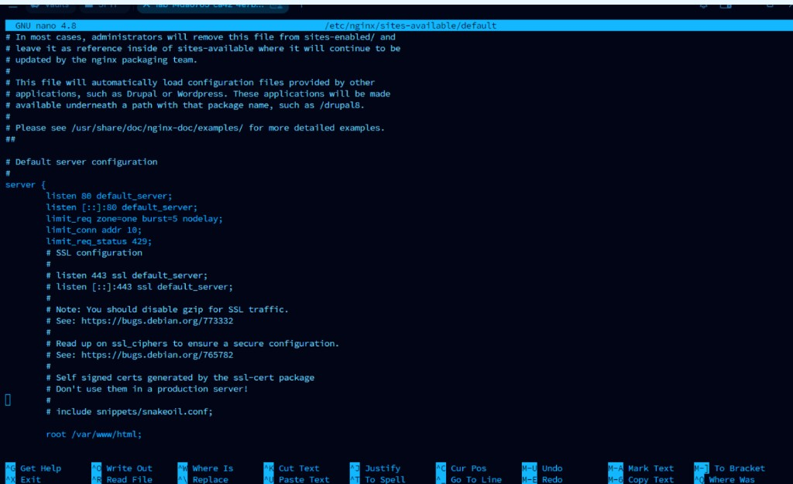
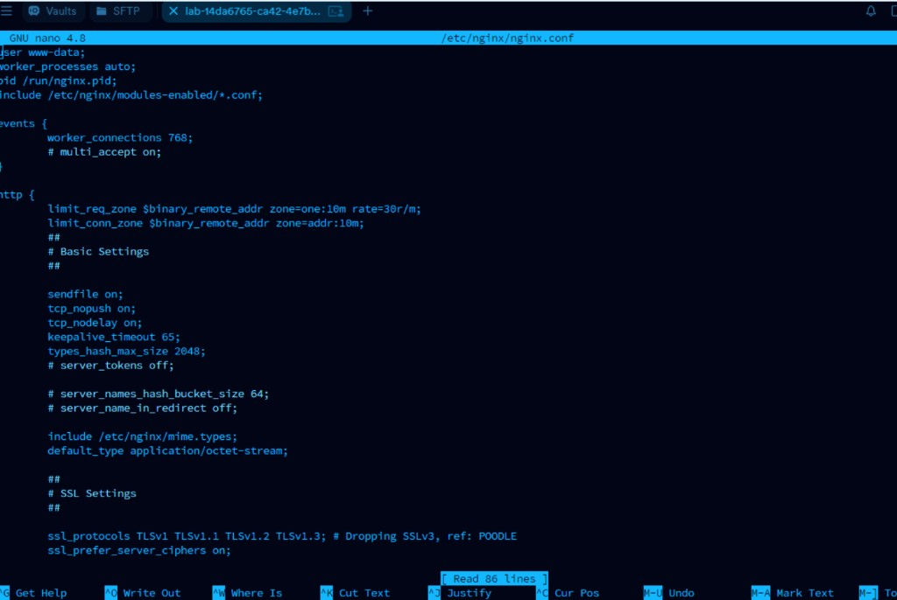
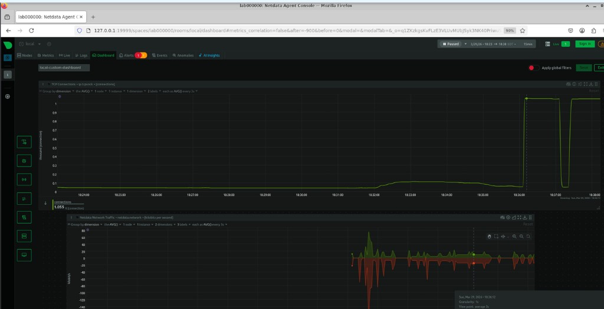

01
Overview
Distributed denial-of-service (DDoS) attacks have grown in popularity and have affected large providers. A simpler form is denial-of-service (DoS), where the attacker operates from a single internet connection rather than many.
This project runs a Slowloris-style DoS against the local server on a course VM, then adds Nginx rules to mitigate it. Unlike volumetric floods that overwhelm a host with raw traffic, Slowloris holds connections open by sending partial HTTP requests slowly—exhausting connection limits without the volume that traditional flood defenses look for.
For the stretch task, provided .pcap files are compared to decide which capture
shows a vulnerable server and which shows traffic under DoS mitigation.
02
Goals
- Tooling
- Use Nginx and Slowloris in the lab environment, and monitor the host with Netdata.
- Mitigation
- Configure DoS mitigation rules in Nginx (rate limits, connection limits, and related status handling).
- Capture analysis
- Analyze
.pcapfiles to determine which server is vulnerable and which is prepared to mitigate DoS. - Concept
- Understand why application-layer DoS attacks need different mitigations than volumetric flood attacks.
03
Nginx Configuration
DoS mitigation rules implemented in /etc/nginx/nginx.conf and
/etc/nginx/sites-available/default.

limit_req,
limit_conn, and limit_req_status 429.
nginx.conf zones:
limit_req_zone at 30r/m and limit_conn_zone.04
Netdata · Unprotected Attack
TCP connections graph during the unprotected Slowloris attack (Netdata dashboard with Network Traffic and TCP Connections).

05
Explanation of Differences
The difference between the protected and unprotected runs can be seen by looking at the network traffic. As shown by the graph, the unprotected attack causes much higher network traffic whereas the protected one limits it marginally. The limit request was successful in mitigating the DoS attack.
06
Stretch Challenge · PCAP Comparison
Using Wireshark on the course capture pair, determine which file is from the vulnerable server and which is from the server with DoS mitigation.
The PCAP from the vulnerable server is B.pcap. A.pcap has many RST
packets, which means active connections are being dropped, whereas B.pcap has
many ACK packets, which means it is accepting Slowloris connections and letting them pile
up, overwhelming the server.
07
Key Takeaways
Rate limiting and connection limits work against Slowloris because they enforce resource boundaries the server controls—the defense is configuration, not just more bandwidth. Application-layer attacks are harder to block at the network perimeter because each request can look like legitimate HTTP; mitigation requires understanding the protocol, not only volume. The PCAP differences show the same hardware responding differently based solely on how Nginx is tuned.